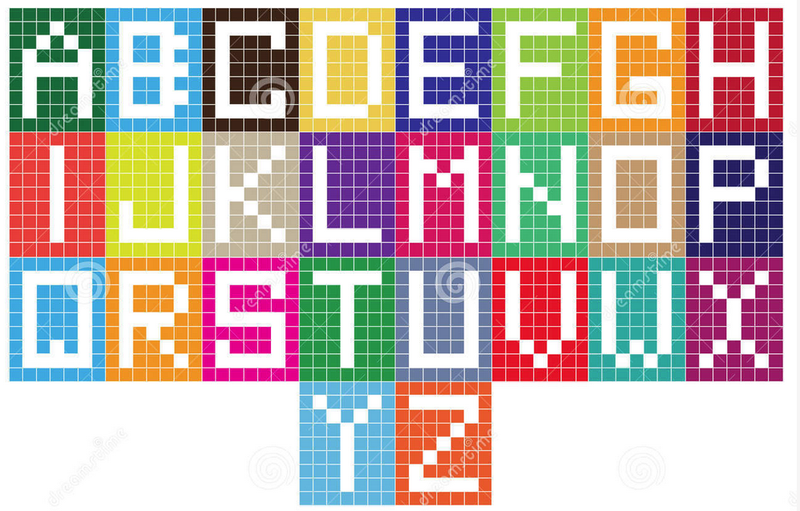
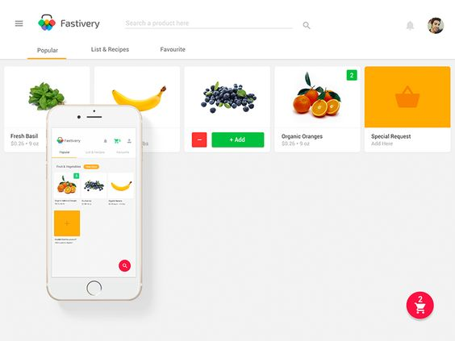

Projects
Adagrams
Adagrams is a fictional game in which a player is given a random set of letters and must make an anagram using those letters. Adagrams has a specific scoring system, so that the player's submitted anagram scores points.
Grocery Store
We want to write library code that grocery stores would use. We want our library code to be able to keep track of the orders that folks make in the store. The program will return a list of the orders ordered by the customer you are looking for.
OO Ride Share
We will build a Ruby library that loads lists of passengers, trips and drivers from CSV files, provides methods for exploring this data, and provides a way to request a new trip. We will not write an interactive command-line program.
Slack CLI
We will write a complete command-line application that interacts with Slack. We will use the Slack API in order to let us list users and channels, get details on users and channels, and send messages to users or channels, all from a Ruby program.
- 
- 